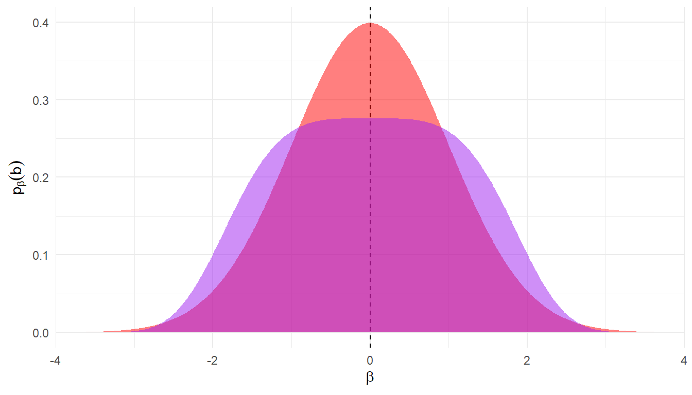

For the average effect parameter \(\beta\), we consider \(L\)-norm priors with density \[
d_\beta(b) \propto \exp\left(- \phi\left| b - \mu \right|^L \right),
\] where \(\mu\) is the mean (and median and mode), \(\phi\) is a precision parameter (i.e., inverse of scale), and \(L\) is the norm. We consider two version of the priors, both with \(\mu = 0\). As a potential default prior, we use \(L = 2\) and \(\phi = \frac{1}{2}\), which corresponds to a standard normal distribution. As a weaker prior, we use \(L = 4\) and \(\phi = \frac{1}{16}\), which produces a playtkurtic distribution that is very flat over the range \(|\beta| < 0.8\) but becomes much sharper for \(|\beta| > 2\). Figure 1 depicts the densities of these prior distributions, with the default in red and the weaker prior in purple.
Code
Lp_dist <-function(mu =0, precision =1, L =2, ...) { Const <-gamma(1/ L) *2/ (L * precision^(1/ L)) f <-function(x) exp(-precision *abs(x - mu)^L) / Const g <-function(x) sapply(x, \(y) integrate(f, lower =-Inf, upper = y, ...)$value)return(list(pdf = f, cdf = g))}beta_default <-Lp_dist(mu =0, precision =1/2, L =2)beta_weak <-Lp_dist(mu =0, precision =1/16, L =4)x <-seq(-4, 4, length.out =500)tibble(beta = x,default = beta_default$pdf(x),weak = beta_weak$pdf(x)) %>%ggplot() +geom_vline(xintercept =0, linetype ="dashed") +geom_area(aes(beta, default), fill ="red", alpha =0.5) +geom_area(aes(beta, weak), fill ="purple", alpha =0.5) +scale_x_continuous(expand =expansion(0,0)) +labs(x =expression(beta), y =expression(p[beta](b)) )

Figure 1: Prior distributions on \(\beta\)
To further interpret these priors, we can consider 1) the density at benchmark values of \(\beta\) relative to the density at the center of the distribution and 2) the total prior probability of \(|\beta| < b\) for various values of \(b\). Table 1 reports these quantities for both the default and weaker priors. The columns labelled “Relative density” correspond to \(d_\beta(b) / d_\beta(0)\); the columns labelled “Prior probability” correspond to \(\text{Pr}(|\beta| < b)\).
Table 1: Relative density and total probability for benchmark values of \(\beta\)
Relative density
Prior probability
b
Default
Weaker
Default
Weaker
0.25
0.969
1.000
0.197
0.138
0.50
0.882
0.996
0.383
0.276
0.80
0.726
0.975
0.576
0.439
1.00
0.607
0.939
0.683
0.545
1.50
0.325
0.729
0.866
0.779
2.00
0.135
0.368
0.954
0.932
2.50
0.044
0.087
0.988
0.990
3.00
0.011
0.006
0.997
1.000
Priors for \(\zeta\) (log of the selection parameter)
For the selection parameter \(\zeta = \log(\lambda)\), we consider \(L\)-norm priors with density \[
d_\zeta(z) \propto \exp\left(- \phi\left| z - \mu \right|^L \right),
\] where \(\mu\) is the mean (and median and mode), \(\phi\) is a precision parameter (i.e., inverse of scale), and \(L\) is the norm. We consider two version of the priors. As a potential default prior, we use \(L = 2\), \(\mu = \log(0.8)\), and \(\phi = \frac{1}{2}\), which implies that \(\zeta\) follows a normal distribution with mode of \(\mu\) and a standard deviation of 1 (i.e., \(\lambda\) follows a log-normal distribution). As a weaker prior, we use \(L = 4\), \(\mu = \log(0.5)\), and \(\phi = \frac{1}{16}\), which produces a playtkurtic distribution that is very flat over the range \(0.2 < \lambda < 1\) but becomes much sharper for \(\lambda < 0.05\) or \(\lambda > 5\). Figure 2 depicts the densities of these prior distributions, with the default in red and the weaker prior in purple.
To further interpret these priors, we can consider 1) the density at benchmark values of \(\lambda\) relative to the density at \(\lambda = 1\) (or \(\zeta = 0\)) and 2) the cumulative prior probability of \(\lambda < l\) for various values of \(l\). Table 2 reports these quantities for both the default and weaker priors. The columns labelled “Relative density” correspond to \(d_\zeta(l) / d_\zeta(1)\); the columns labelled “Cumulative probability” correspond to \(\text{Pr}(\lambda < l)\).
Table 2: Relative density and total probability for benchmark values of \(\lambda\)
Relative density
Cumulative probability
l
z
Default
Weaker
Default
Weaker
0.01
-4.605
0.000
0.000
0.000
0.000
0.02
-3.912
0.001
0.001
0.000
0.000
0.05
-2.996
0.022
0.175
0.003
0.012
0.10
-2.303
0.118
0.667
0.019
0.089
0.20
-1.609
0.392
0.971
0.083
0.249
0.50
-0.693
0.918
1.015
0.319
0.500
0.80
-0.223
1.025
1.011
0.500
0.630
1.00
0.000
1.000
1.000
0.588
0.691
1.50
0.405
0.841
0.926
0.735
0.798
2.00
0.693
0.674
0.805
0.820
0.866
4.00
1.386
0.281
0.315
0.946
0.973
8.00
2.079
0.072
0.025
0.989
0.999
16.00
2.773
0.012
0.000
0.999
1.000
Priors for \(\gamma\) (log of the heterogeneity)
For the average effect parameter \(\zeta = \log(\lambda)\), we consider \(L\)-norm priors with density \[
d_\zeta(z) \propto \exp\left(- \phi\left| z - \mu \right|^L \right),
\] where \(\mu\) is the mean (and median and mode), \(\phi\) is a precision parameter (i.e., inverse of scale), and \(L\) is the norm. We consider two version of the priors. As a potential default prior, we use \(L = 2\), \(\mu = \log(0.8)\), and \(\phi = \frac{1}{2}\), which implies that \(\zeta\) follows a normal distribution with mode of \(\mu\) and a standard deviation of 1 (i.e., \(\lambda\) follows a log-normal distribution). As a weaker prior, we use \(L = 4\), \(\mu = \log(0.5)\), and \(\phi = \frac{1}{16}\), which produces a playtkurtic distribution that is very flat over the range \(0.2 < \lambda < 1\) but becomes much sharper for \(\lambda < 0.05\) or \(\lambda > 5\). Figure 2 depicts the densities of these prior distributions, with the default in red and the weaker prior in purple.
To further interpret these priors, we can consider 1) the density at benchmark values of \(\lambda\) relative to the density at \(\lambda = 1\) (or \(\zeta = 0\)) and 2) the cumulative prior probability of \(\lambda < l\) for various values of \(l\). Table 2 reports these quantities for both the default and weaker priors. The columns labelled “Relative density” correspond to \(d_\zeta(l) / d_\zeta(1)\); the columns labelled “Cumulative probability” correspond to \(\text{Pr}(\lambda < l)\).